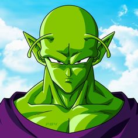

es un actor de doblaje, locutor, conductor y publicista mexicano.
Es mayormente conocido por haber dado voz a Piccolo y Kami-sama en
la franquicia de Dragon Ball, a Alf en la serie del mismo nombre,
la primera voz de Woody en la franquicia de Toy Story, y al profesor
Severus Snape en la primera, quinta y sexta película de la saga de Harry Potter.
Además de sus reconocidos trabajos anteriormente mencionados, Carlos Segundo
ha participado en el doblaje de una gran cantidad de videojuegos, entre los
que destacan sus papeles de Damon Baird en Gears of War y el Almirante Lord Terrence Hood en Halo 3.
|  |